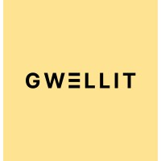
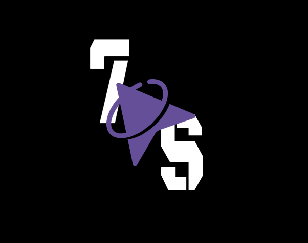

Mes projets
Voici des projets que j'ai pu réaliser et qui m'ont permis de développer diverses compétences professionnelles.
Stage dans l'entreprise Gwellit
Durant ce stage de 8 semaines, j'ai réalisé un bot en Python dans l'application de messagerie gratuite Telegram.
L'objectif de ce bot était de permettre aux éleveurs de suivre leurs animaux depuis l'application. Le bot donne accès à l'ensemble des informations sur les animaux, les bâtiments, etc. Il peut aussi surveiller les animaux en se connectant aux caméras et en utilisant l'IA pour détecter des anomalies.
Compétences acquises : J'ai appris à réaliser un projet de bout en bout, tout en optimisant le code pour garantir une meilleure performance du bot. En collaboration avec l'équipe, nous avons administré les systèmes de caméra et de données, et j'ai pu conduire le développement de certaines fonctionnalités clés du projet.
 Télécharger diaporama de présentation
Télécharger diaporama de présentationSite de location saisonnière
Durant ma deuxième année à l'IUT de Lannion, j'ai réalisé, dans un groupe de 7 personnes, un site web fonctionnel permettant la location de logements.
Ce site est dynamique, permettant la création de comptes pour clients et propriétaires, ainsi que la gestion des logements et des avis. Nous avons utilisé les langages HTML, CSS, PHP et JavaScript, avec une base de données SQL pour le stockage des informations.
Compétences acquises : J'ai appris à gérer un projet d'envergure en utilisant la méthode agile Scrum, et à collaborer efficacement avec les membres de l'équipe pour optimiser le développement du site. J'ai également pris en charge l'administration de la base de données pour garantir une gestion optimale des informations.
Système de recommandation de livres (en cours)
Cette année, avec une équipe de 7 personnes, nous réalisons un système de recommandation de livres basé sur des algorithmes tels que l'Item Base (basé sur les livres) et le User Base (basé sur les utilisateurs).
Nous avons collecté des données provenant d'un fichier CSV, que nous avons nettoyées et analysées pour en tirer des conclusions pertinentes pour le système de recommandation. Nous avons aussi réalisé une base de données SQL en prenant en compte les systèmes de recommandation et en y intégrant des données utilisateurs récoltées via un formulaire.
Le projet est en cours de finalisation avec la mise en place d'un API pour implémenter les systèmes de recommandations sur un site web.
Compétences acquises : J'ai appris à collaborer efficacement dans une équipe pour réaliser un système complexe. En outre, j'ai acquis des compétences dans l'administration de bases de données PostgreSQL et dans l'optimisation des algorithmes pour améliorer les performances des recommandations. J'ai également pris en charge la gestion du projet, en veillant à ce que chaque membre de l'équipe ait les ressources nécessaires pour mener à bien ses tâches.